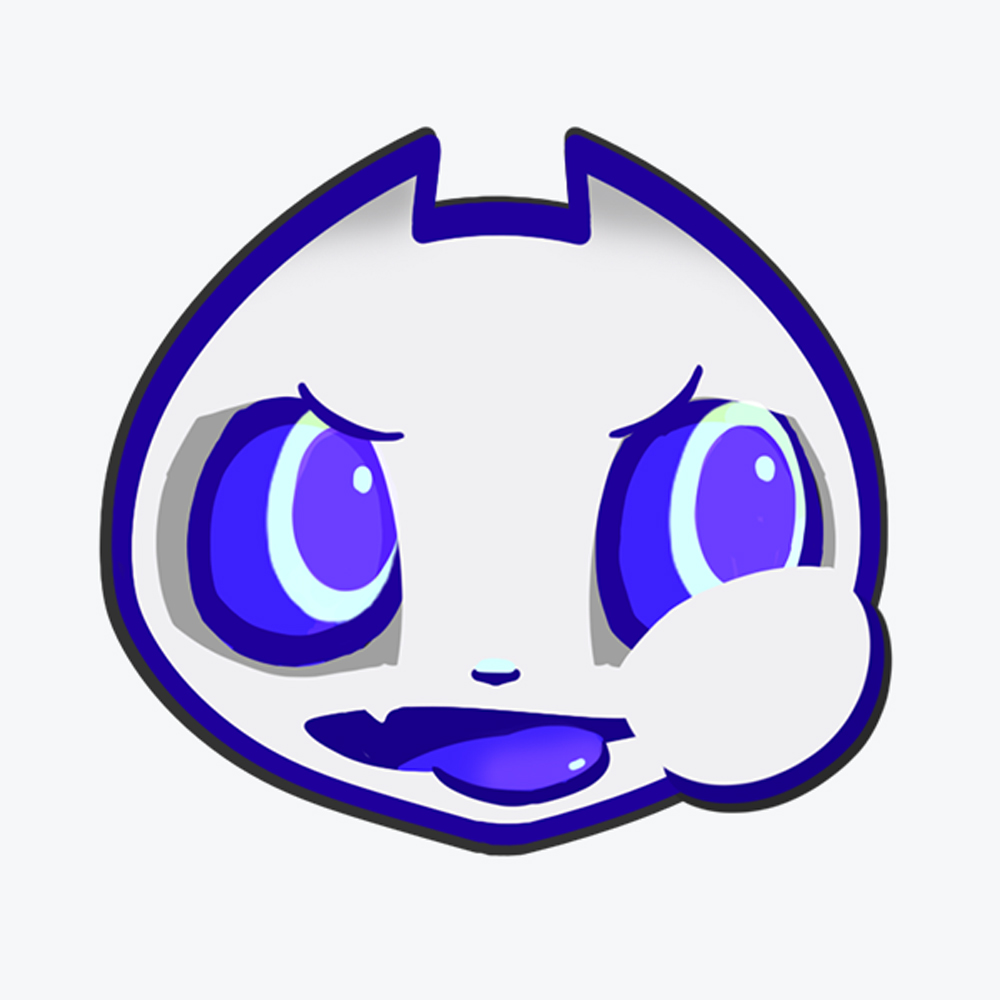
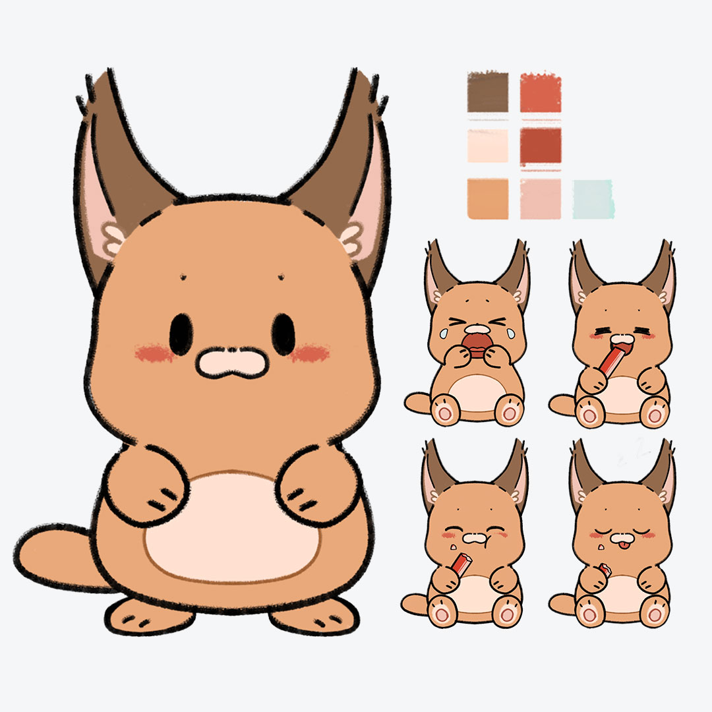
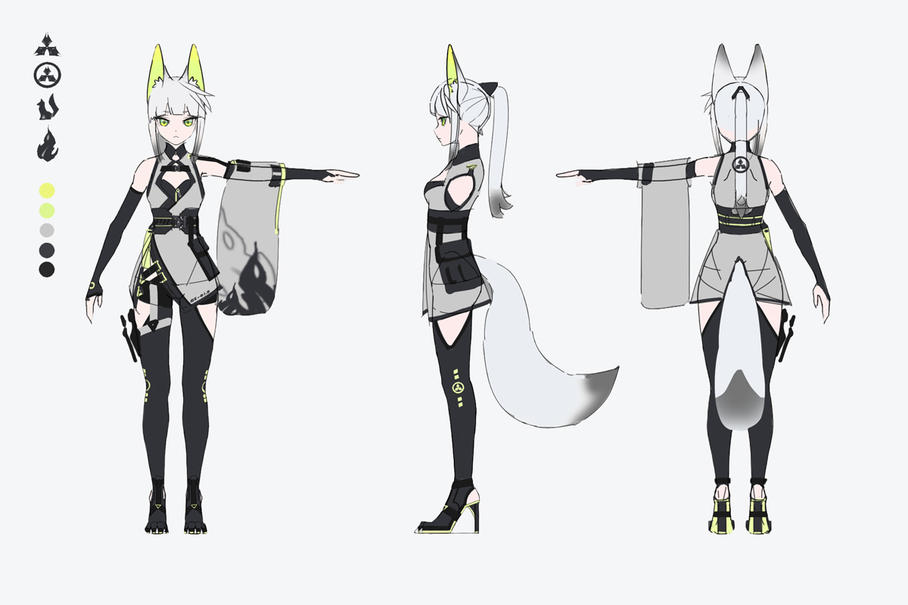
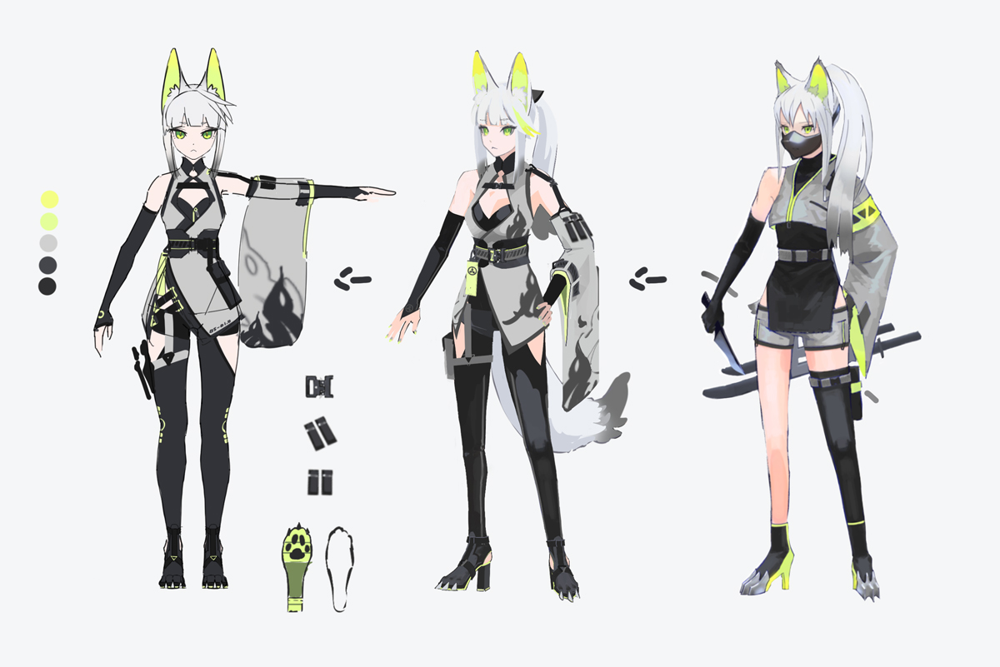

ダイエット商材バナー
Illustrator / 広告課題
ダイエット商材の広告を想定して制作。 商品と価格がひと目で伝わるよう、情報の優先順位と文字の強弱を意識しました。
PORTFOLIO
Graphic & Web Design
バナー・SNS画像を中心に、短尺動画やWeb制作に取り組んでいます。
Illustrator / 広告課題
ダイエット商材の広告を想定して制作。 商品と価格がひと目で伝わるよう、情報の優先順位と文字の強弱を意識しました。
Illustrator / SNSデザイン
SNS向けの豆知識投稿として制作。 写真を主役にしながら、情報を短時間で読み取れる文字配置と親しみやすいデザインを意識しました。
Illustrator / SNSデザイン
SNS広告を想定したバナーを制作。 給与やサービス内容など、ユーザーに最も伝えたい情報が最初に目に入るよう、 配色と文字サイズにメリハリをつけました。
Premiere Pro / 30秒
SNS向けの縦型ショート動画として制作。 短い時間でも内容が伝わるよう、テンポのよいカットとテロップの見やすさを意識しました。
Premiere Pro / 15秒
SNS広告を想定した15秒の縦型動画を制作。 冒頭で興味を引き、短時間で商品の訴求内容が伝わる構成とテロップ表現を意識しました。

Photoshop / キャラクターデザイン
SNSアイコン用のオリジナルキャラクターを制作。 エイリアン×猫をモチーフに、アイコンサイズでも印象に残るシルエットと配色を意識しました。

Photoshop / Live2D用素材制作
Live2Dでの使用を想定して制作したオリジナルキャラクター。 表情や動きを付けられるよう、顔・目・口・手などをパーツごとに分けて制作しました。


Character Design / 三面図
VRChatでの使用を想定し、狐×忍者をモチーフに三面図を制作しました。 正面・側面・背面のバランスを意識し、3D化した際に違和感のないデザインに仕上げました。